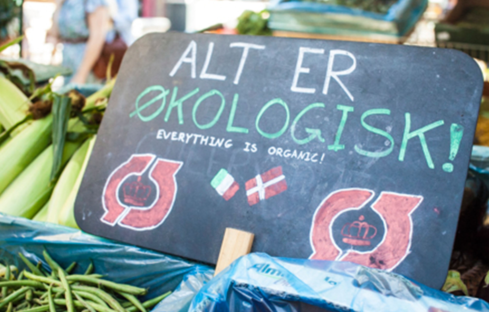

Green Guide: Copenhagen
January - May 2016
Overview
Green Guide promotes patronage to local eco-friendly businesses by informing users of current carbon-neutral initiatives and making these shops easy to discover. This app was part of my spring 2016 international coursework in Denmark. The course focused on designing context-aware applications to help Copenhagen become the first carbon-neutral capital by 2025.
Project Details
Group members:
Kristine Carlsen, Thorbjørn JensenMy roles:
Brainstorming, Survey Design, Interview Design, SketchingContext
Our target demographic was shoppers in Copenhagen, ages 20 to 29. This age range includes the most frequent restaurant-goers, as well as the highest percentage of people with smartphones. Our application fits into the current trend of going green, which is an especially strong force in Copenhagen due to strong cultural environmentalism.
The app design relies on the Hitachi smart city sensor network to gather information about the environment and adjust the app's behavior accordingly. Like the other apps in the course, Green Guide is primarily a design project has not entered development.
Challenges
Designing for a foreign city & culture
My largest challenge for this project was practicing design for a foreign audience. Assumptions I had about how certain features may work were not necessarily true in Denmark, and even if they were, that did not mean they were necessarily true for Copenhagen. I had to be mindful and fact-check my designs harder than ever before by consulting more users and collaborating with my Danish group members at each step in the process.
Additionally, I relied on my group mates for translation. We worked together in English, collaborating on designs and the phrasing of surveys and interview questions. They then translated and conducted interviews in Danish, a decision made for the comfort of the interviewees in order to encourage easy information sharing. The responses were then translated back into English for the group analysis process.
Organic is not carbon-neutral
The most significant hurdle we faced was an early conceptual mistake. Our initial survey and qualitative street interviews mixed healthy, organic, and green businesses together. In reality, however, these are not all carbon-neutral. For example, organic products are often very carbon productive due to extra requirements and long shipping distances.
This was corrected in our second round of user surveys and interviews, and many of the questions from the first round were still usable. However, this problem still represented a significant turning point in Green Guide's conceptual history, and resulted in needing to redouble our efforts to ensure that users will understand the difference between organic, eco-friendly, and carbon-neutral in the final design. This was mainly achieved through interviews with prospective businesses to be featured on the app, and then highlighting in their description how they are making an effort to help the environment. We also touched on this with the green leaf badges, which rate shops on how carbon-friendly they are.
Process
Concept
The process began with brainstorming about various ways in which we could help Copenhagen become more carbon-neutral. We eventually settled on an app that, instead of prompting users to reduce their own emissions, would place emphasis on rewarding those who are already taking steps.
By promoting eco-friendly businesses, the app would make it a more profitable business model and stimulate conversation. It is important to note that the cultural environmentality of Copenhagen makes this viable, whereas in other places such an app might not succeed due to differing cultural values.
Research
A survey was sent to gather information about the kinds of businesses that Copenhagen residents use, know are eco-friendly, and would like to find more eco-friendly options for. The first survey included organic options mixed in with carbon-neutral, and had to be revised. The second survey was shared on Facebook by all group members and some of their family members, and got 97 unique responses from various areas of Copenhagen.
We also conducted in-person qualitative interviews in the city. Two rounds of interviews were done with both strangers and prospective users that we knew but were not ITU students. The on-street interviews were early, during the organic-concept phase, but much of their information was still usable. The most in-depth user interviews were later, and informed by the results of both surveys and some in-class feedback of our early iterations.

Sketches & Mockups
After the first survey, we began to decide features and use-cases of the app, followed by sketching potential layouts. We updated our designs after recieving in-class feedback, and redirected our design to make the distinction between organic and carbon-neutral more clear to users.
We had started Green Guide to be like a scavenger-hunt, where the app would give a "Discovery List" each month of places to visit and earn points. After our initial user interview feedback, however, we removed that and began to focus more heavily on social aspects of the app. This led to a "Favorites" page being a place to see where you and your friends have visited most often, as well as a social recommendation feature.
Prototyping & User Testing
An InVision prototype was created from the mockups and tested with 2 potential users, who were different from the interviewees.
One of the most significant changes due to feedback was changing "Favorites" to "My Page", in order to make it "more personal and social" and to "connect it to social media." Both users suggested this type of change. One went so far as to say that he wanted to see what his friends were doing on the app because he "value[s] that more than reviews from complete strangers."
Both users said they liked the simple and straight-forward nature of the app, and could see themselves using it. One user also affirmed that he liked having in-app navigation rather than using a separate application. This was a large component of our earlier surveys, and was good to get more feedback on.


{kind=link}
{kind=link}
{kind=link}
{kind=link}
Final Functionality
The app begins at the home page, where GPS data is utilized to show businesses near the user's current location. Green leaf badges indicate how environmentally friendly the shop is, as well as a description about how they are taking steps to be carbon-neutral. Users may also search by category, such as shops, bars, and restuarants, and view these results on a map that is centered on their current location.
An optional in-app route planner is available. This was inspired by the thought that finding a carbon-neutral business to support is less eco-friendly overall if you travel there by car, and those who walk or ride bikes may wish to utilize the sensor data and travel via a "greener" route that has less traffic and pollution. Therefore, the route planner has an option for the Greenest route as well as the default Shortest route.
{kind=link}
{kind=link}
{kind=link}
We also chose to include a social media experience in the app, in order to increase attention for this cause and socially reward patronage to environmental businesses. This is accessible by "My Page", which is a feed that indicates which of your friends have most recently checked in at shops. The check-in is automatic (but may be disabled in Settings), utilizing the Hitachi sensors placed in businesses and the context-aware capabilities of the app.
Reflection
This was a rewarding and fun design challenge. Having the opportunity to consider the usability needs of a different culture was a great experience, and designing for a cause that I care about was a lot of fun. This was the most in-depth data collection I had engaged in up to this point, and I found that it greatly increased my confidence in the design decisions our group made. I am very proud of the final design we arrived at, and I would love if an app like this were viable back in the United States.